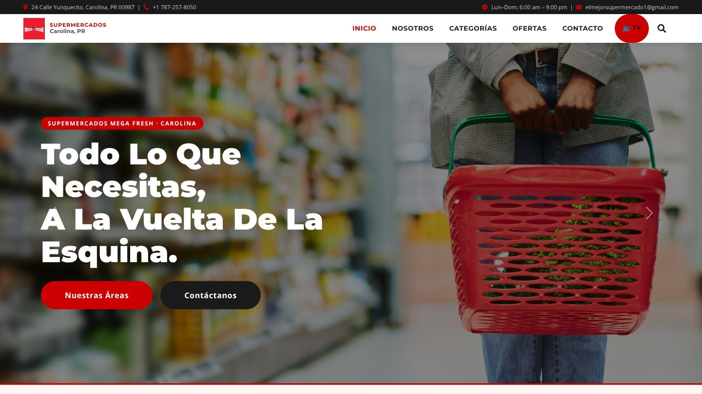
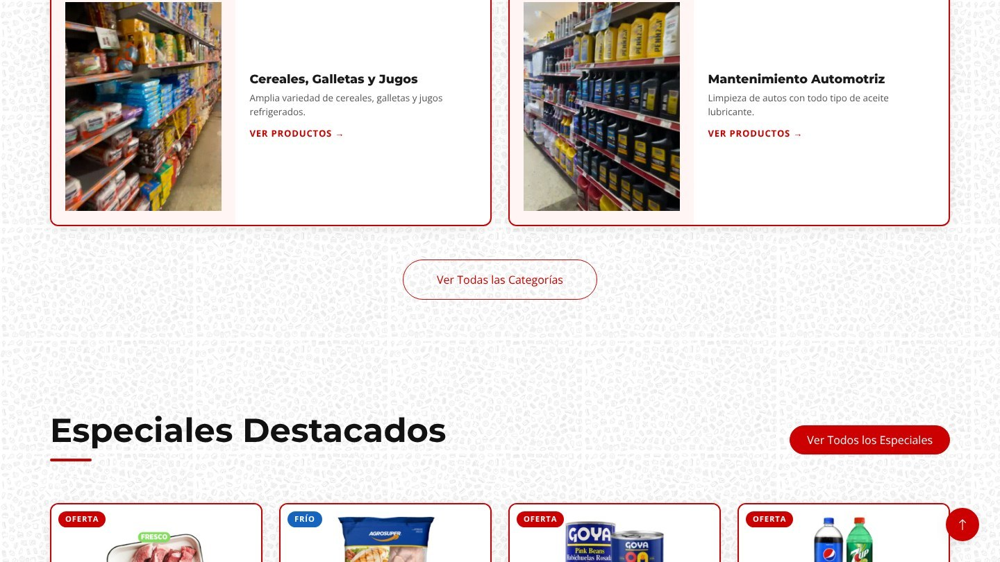
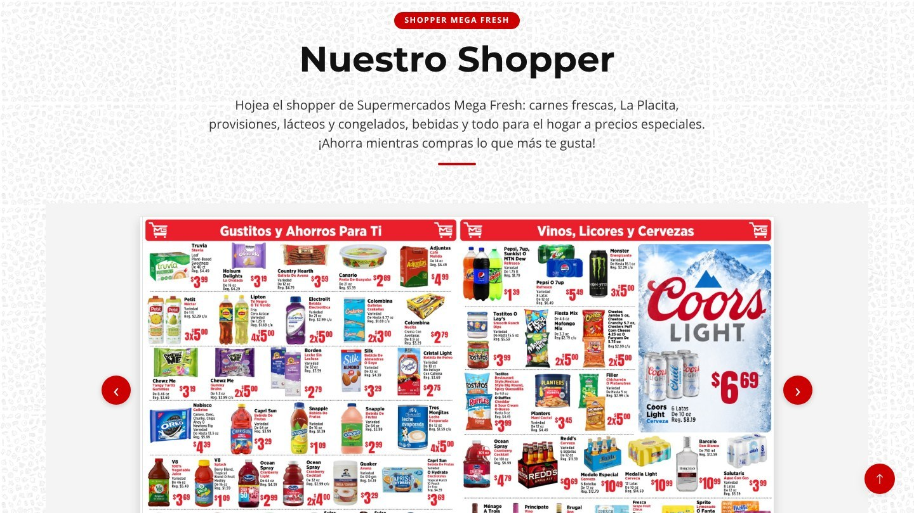
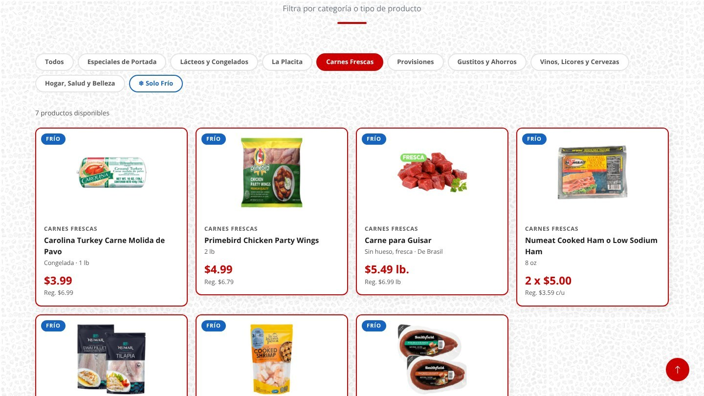
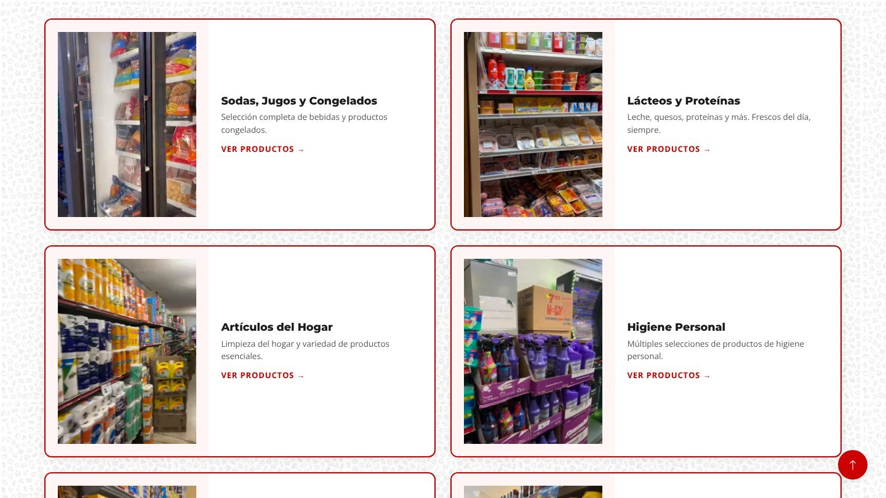
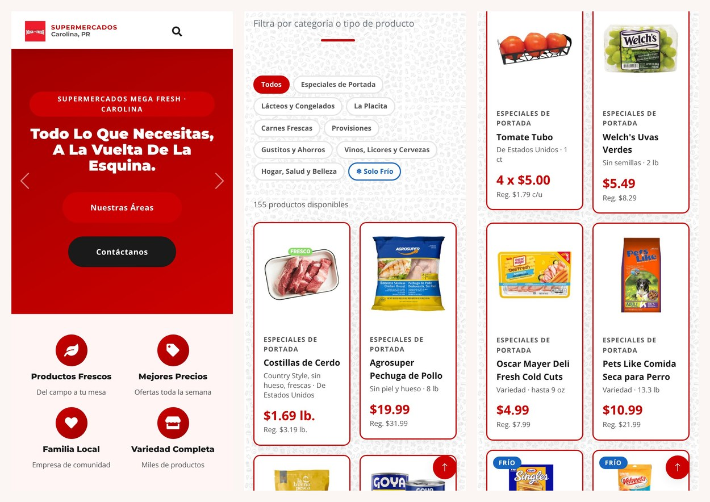
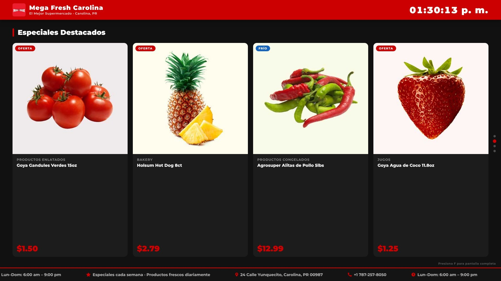
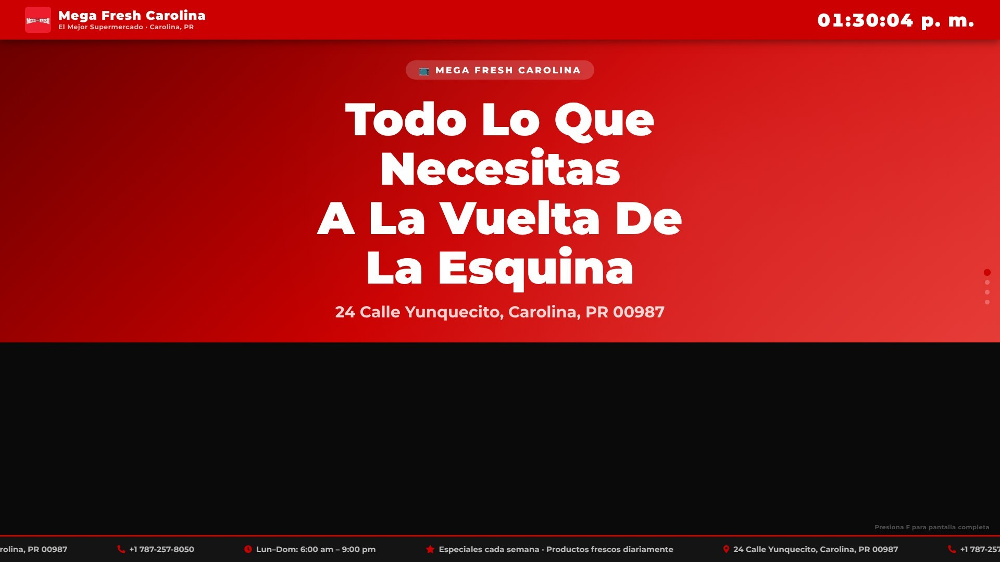

The website I designed and built for Supermercados Mega Fresh Carolina. Shoppers can check the week's specials, flip through the printed shopper, browse every department and reach the store, and a TV mode turns it into signage for the screens inside.




Each department card plays a short clip filmed in the actual aisle, so customers see the real store and not stock photos.

Every page reflows for a small screen, menu and search included.


